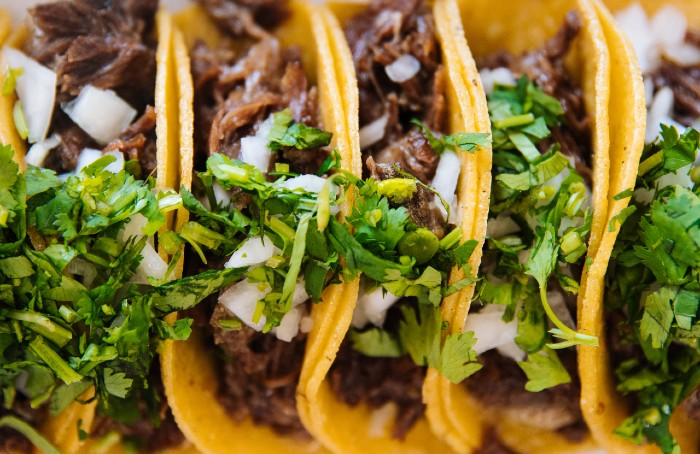

Carne Asada Tacos Recipe

Description
Carne Asada Street Tacos are sure to hit the spot. This authentic Mexican dish is always a crowd-pleaser in our home. With just a few simple ingredients, you will get the most mouth-watering beef dinner at home!
Ingredients
- 2 lb beef flank steak
- 1 cup soy sauce
- 1 cup chopped cilantro
- 1 medium orange
- 1 lime
- 1 chopped onion
- 1/2 cup cotija cheese
- 8 corn tortillas
Steps
- Place the Flank Steak in a large plastic storage bag. Add soy sauce, orange slices and lime juice. Chop green onions and cilantro and add them into the bag. Rub the seasoning all over the beef. Seal the bag and let it marinate for at least 6 hours.
- Remove the meat from the marinade. Pat dry with a paper towel. Remove all excess herbs from the carne asada. Grill the carne asada until the internal temperature reaches medium-rare at 145 °F.
- Let it rest for 10 minutes. Slice it against the grain and cut it into bite-sized strips.
- Assemble tacos by first adding the carne asada and garnishing with onions, cilantro, and a squeeze of lime.